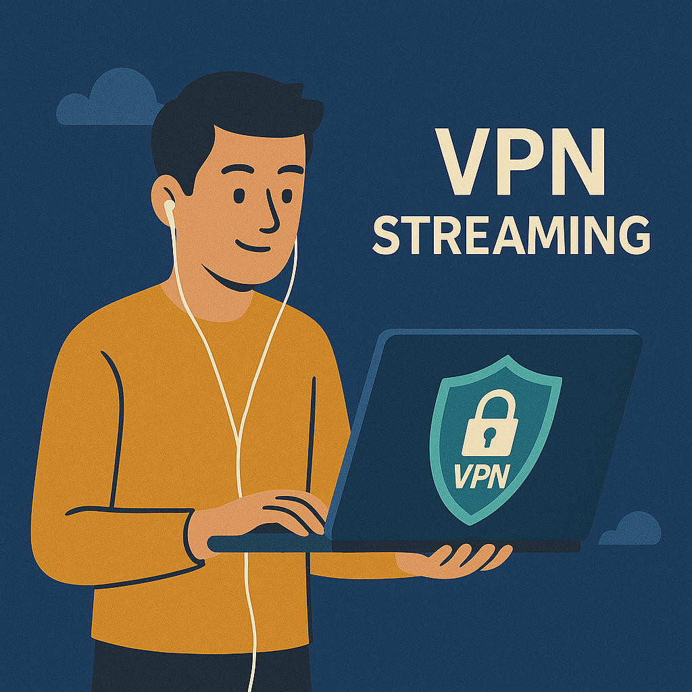

VPN Microsoft Edge 2026 : Activez la protection maximale en France

Commencez ici
Microsoft Edge n’est plus un navigateur de second choix
Le vieux réflexe “ouvrir Edge pour télécharger Chrome” ne décrit plus vraiment la réalité de 2026. Edge est devenu un navigateur solide, mieux intégré à Windows, plus propre dans sa logique de sécurité et plus crédible pour les utilisateurs qui veulent une protection rapide sans installer immédiatement une collection d’extensions douteuses. C’est précisément dans ce contexte que Réseau sécurisé Edge attire l’attention.
La promesse n’est pas magique. Elle est plus simple et, pour cela même, plus utile : offrir une couche de confidentialité intégrée dans le navigateur, surtout quand vous êtes sur un Wi‑Fi public, dans un espace partagé ou dans une situation où vous voulez limiter la lisibilité de votre trafic sans transformer votre machine entière en chantier. Pour la base, lisez aussi Qu’est-ce qu’un VPN ? et VPN et légalité.
Ce que les utilisateurs français veulent savoir tout de suite
Activer vite
Le besoin numéro un reste très concret : où cliquer, comment l’activer et si la version intégrée suffit déjà.
Wi‑Fi public
Le cas d’usage le plus fort reste le Wi‑Fi public : café, gare, hôtel, aéroport, coworking.
Banque en ligne
Beaucoup veulent surtout savoir si Edge est suffisamment sûr pour une session BNP, Société Générale ou Crédit Agricole.
Extensions gratuites
Le vrai danger n’est pas “gratuit” en soi, mais l’opacité, les permissions trop larges et la stabilité médiocre.
Vous voulez une réponse pratique sans roman marketing ?
Si vous cherchez une protection rapide dans Edge, puis une sortie claire vers une option plus complète si nécessaire, ce sont les comparaisons les plus utiles à regarder en premier.
Divulgation : ces liens sont des liens partenaires. Si vous achetez via eux, nous pouvons recevoir une commission sans frais supplémentaires pour vous.
Les modes de protection : lequel choisir en France ?
Selon les versions d’Edge, l’accès à Réseau sécurisé Edge peut se présenter comme une fonction intégrée simple avec différents comportements d’activation. En pratique, la question utile n’est pas “combien de modes marketing ?”, mais “quand l’utiliser ?”. Pour la France, il y a trois cas très simples à retenir.
Mode optimisé
Le plus logique pour la majorité des utilisateurs. Vous gardez une utilisation légère et la fonction intervient surtout quand la situation devient plus sensible, par exemple en Wi‑Fi public.
Cloudflare, RGPD et banque en ligne : ce qu’il faut comprendre
Pour un utilisateur français, la vraie question n’est pas “est-ce que ça sonne technique ?”, mais “est-ce que c’est propre pour mes usages sensibles ?”. Réseau sécurisé Edge s’appuie sur une logique de trafic protégé qui, dans la pratique, améliore la confidentialité de votre navigation dans le navigateur. Pour une session sur le site de la BNP, de la Société Générale ou du Crédit Agricole depuis un réseau public, c’est déjà un plus utile.
Il faut toutefois rester précis. Un VPN navigateur ne transforme pas votre ordinateur en bunker absolu. Il ajoute une couche de protection sur le trafic Edge. Il ne remplace ni les bonnes pratiques de sécurité, ni l’authentification forte, ni la protection globale du poste. Côté audience française, la mention du RGPD compte parce qu’elle rappelle que la gestion des données et la transparence importent. Cela ne doit pas être utilisé comme un slogan vide, mais comme un critère supplémentaire de sérieux quand on compare des services.
Pour approfondir, continuez avec VPN et banque en ligne, VPN et Wi‑Fi public et No-Logs VPN.
Edge Android, iPhone et Microsoft 365
En français, beaucoup de recherches tournent autour de “mettre un VPN sur Edge Android” ou d’un supposé APK séparé. Il faut être net : il n’existe pas un produit officiel distinct appelé “Edge VPN APK” qu’il faudrait chasser sur des sites tiers. La voie sûre est beaucoup plus simple : installer l’application officielle Microsoft Edge via Google Play ou l’App Store, puis décider si le besoin réel impose une vraie application VPN mobile.
Pour les utilisateurs ancrés dans Microsoft 365, Edge peut aussi paraître plus naturel parce qu’il s’intègre mieux dans un environnement déjà Microsoft. Cela ne veut pas dire que Réseau sécurisé Edge est un avantage Microsoft 365 autonome ni une offre corporate séparée. Cela veut dire qu’en pratique, le navigateur, le compte Microsoft et les habitudes de travail forment un ensemble plus cohérent. Pour les guides mobiles : VPN sur Android, VPN sur iPhone, VPN sur iOS.
Le duel : Edge Secure Network vs concurrence
| Fonctionnalité | Edge Secure Network | VPN traditionnel premium | Extensions VPN tierces |
|---|---|---|---|
| Confidentialité | Bonne pour un usage navigateur léger | Plus forte et plus large | Très variable selon l’éditeur |
| Facilité | Très élevée si la fonction apparaît dans Edge | Plus d’installation, plus de contrôle | Souvent facile à installer, pas toujours facile à faire confiance |
| Usage bancaire | Utile comme couche de protection dans le navigateur | Très bon avec une couverture plus large | À examiner avec plus de prudence |
| Usage idéal | Wi‑Fi public, achats, navigation, banque rapide | Streaming, voyage, travail, protection complète | Dépannage ou test, selon la qualité réelle |
Vidéo rapide : les bases du VPN dans le navigateur
Si la vidéo ne charge pas, regardez-la directement sur YouTube.
Comment Edge protège le trafic du navigateur
Questions fréquentes sur le VPN Edge
Comment activer le VPN sur Edge gratuitement ?
Selon votre version d’Edge, la fonction apparaît dans Browser Essentials ou dans les réglages de confidentialité. Elle nécessite généralement une connexion avec un compte Microsoft personnel.
Est-ce que le VPN Microsoft Edge est sûr ?
Pour un usage navigateur et du Wi‑Fi public, c’est une couche de protection raisonnable. Elle ne remplace pas un VPN complet pour tout l’appareil.
VPN Edge vs Chrome : lequel choisir ?
Edge a l’avantage d’une intégration plus propre avec sa fonction native. Chrome dépend plus vite d’extensions tierces pour obtenir un résultat comparable.
Comment mettre un VPN sur Edge Android ?
Il n’existe pas d’APK officiel séparé appelé Edge VPN. Il faut utiliser l’application officielle Microsoft Edge ou une application VPN complète téléchargée depuis une boutique officielle.
Le VPN Microsoft est-il disponible avec Microsoft 365 ?
Edge Secure Network n’est pas présenté comme un avantage Microsoft 365 autonome. En revanche, l’écosystème Microsoft rend son usage plus cohérent pour les utilisateurs déjà ancrés dans les services Microsoft.
Le VPN Edge est-il adapté à la banque en ligne ?
Pour un usage dans le navigateur sur un Wi‑Fi public, il peut être une couche utile. Il ne remplace ni l’hygiène numérique, ni la sécurité globale du poste.
Les extensions VPN gratuites sont-elles toutes dangereuses ?
Non, pas toutes. Mais elles méritent plus de vérifications sur le modèle économique, l’éditeur, les permissions et la stabilité réelle.

À propos de l’auteur
Denys Shchur rédige chez VPN World des guides pratiques sur la confidentialité, la sécurité réseau et l’usage réel des VPN, avec une attention particulière aux limites techniques, aux risques et aux choix raisonnables.
Vous restez sur Edge ou vous passez à plus complet ?
Si Réseau sécurisé Edge vous semble utile mais trop limité pour votre usage, le pas suivant logique est de comparer une extension sérieuse ou un VPN complet selon vos besoins réels.
Divulgation : ces liens sont sponsorisés.